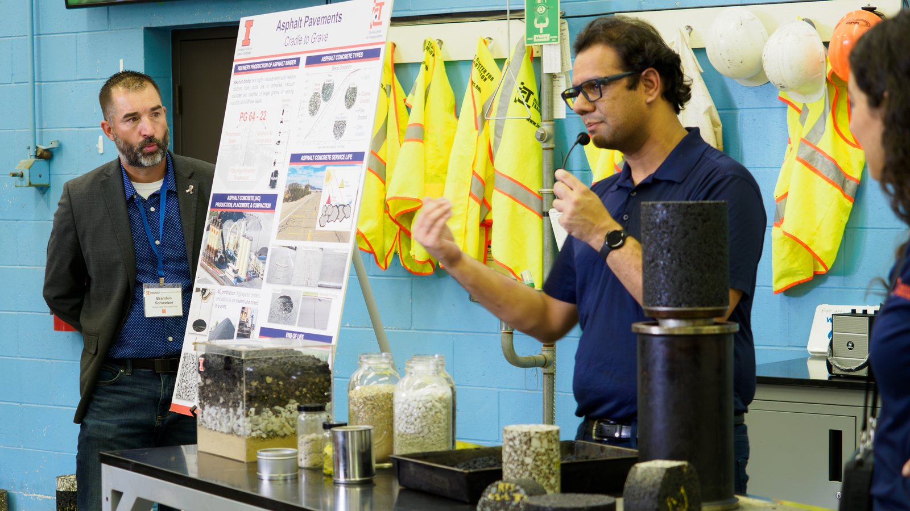
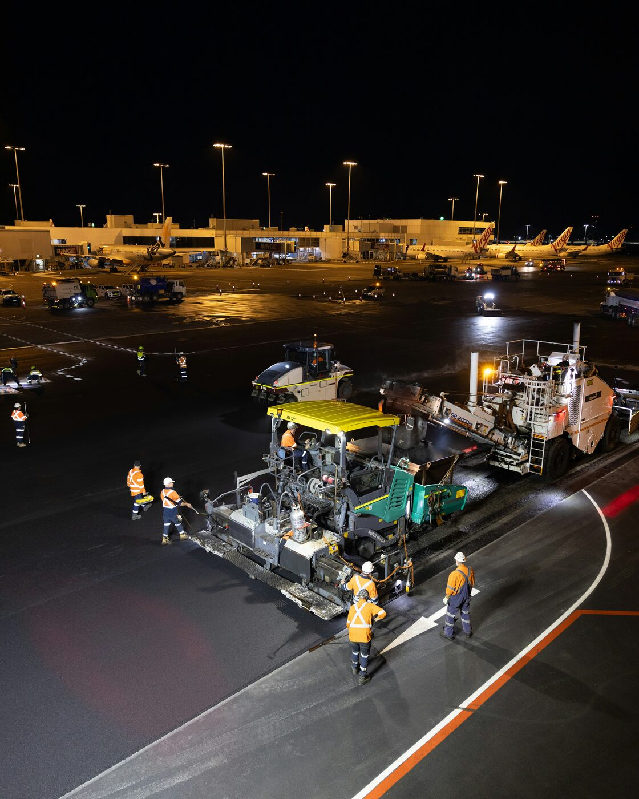
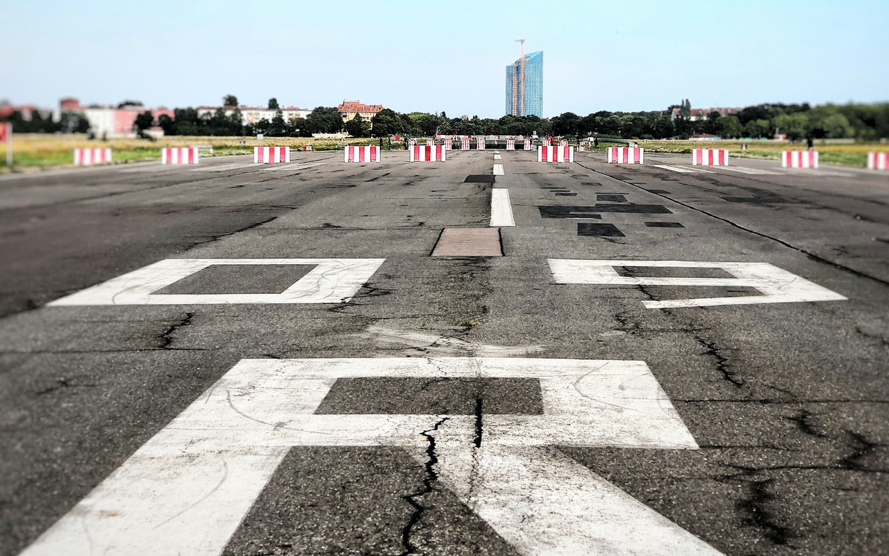
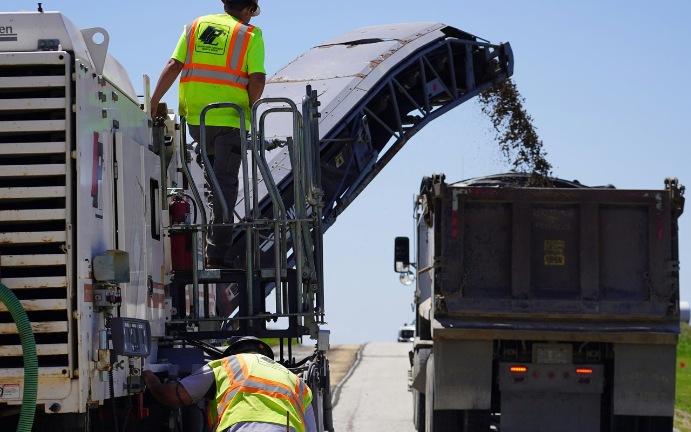

Materials & Durability
New material components can improve pavement durability and sustainability. Realizing that benefit depends on accurately forecasting how they age in the field.
I study why asphalt pavements crack, and how to measure it well enough to write it into a specification. Most of my work is on airfield pavements, where the tests I develop are moving into FAA guidance and ASTM standards.
Civil Engineering
University of Illinois Urbana-Champaign
PhD Candidate
New material components can improve pavement durability and sustainability. Realizing that benefit depends on accurately forecasting how they age in the field.
Fracture and fatigue principles explain how pavement materials behave and eventually fail. This includes developing characterization methods that are both rigorous and practical.
This work advances mix design and characterization for runways and taxiways. It's shaped through coordination with the FAA and international partners.
Civil Engineering
University of Illinois Urbana-Champaign
View courses →Civil Engineering
Texas A&M University
View courses →Civil Engineering
Delhi Technological University
View courses →Full record on Google Scholar · ORCID
Teaching Assistant, Texas A&M University
Teaching Assistant, Texas A&M University
Teaching Assistant, University of Illinois Urbana-Champaign
Association of Asphalt Paving Technologists
Airport Cooperative Research Program, Transportation Research Board
Illinois Asphalt Pavement Association
Novel dissipated-energy approach for fatigue of asphalt concrete.
UV aging of asphalt binders, softening of extracted binders using trichloroethylene.
Fracture and strength testing for airfield pavements.
FAA-sponsored work on asphalt pavement cracking and performance.
FAA-sponsored work on cracking resilience of airfield asphalt mixes.
Academy of Pavement Science and Engineering
Students Advising Graduate Education (SAGE), University of Illinois
University Disciplinary Appeals Panel, Texas A&M University
Graduate and Professional Student Council, Texas A&M University
Indian Graduate Student Association, Texas A&M University
Six years of applied pavement engineering across consulting and research, spanning roadway design, pavement management for state and county agencies, and federally funded materials research.


GoalEstablish implementation guidance for Stone-Matrix Asphalt across U.S. airports.
Graduate student coordinator, directing proposal development and ongoing execution with academic and industry partners.

GoalCharacterize cracking mechanisms in airfield asphalt pavements to inform FAA specifications.
Led the project; findings produced two test methods now in ASTM balloting, the SLT-SCB and DONUT tests, along with recommendation to current FAA advisor circular.

GoalEvaluate recycling agents for asphalt mixtures with high recycled-material content.
Led lab testing of high-RAP binder blends at Texas A&M Transportation Institute; findings published as NCHRP Research Report 927 along with AASHTO PP 127.
Happy to connect, whether it's collaboration, a question, or just to say hello.